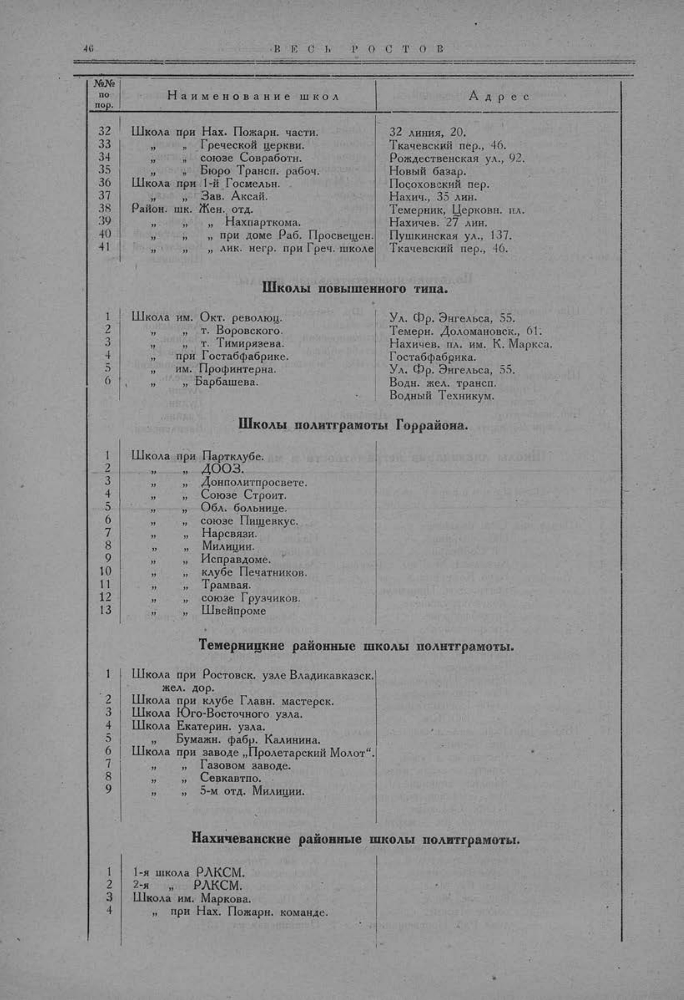

Лист источника 96
Скан

Распознанный текст
46 В Е С Ь Р О С Т О В
№№
по
пор. Наименование школ Адрес
32 Школа при Нах. Пожарн. части. 32 линия, 20.
33 „ „ Греческой церкви. Ткачевский пер., 46.
34 „ „ союзе Совработн. Рождественская ул., 92.
35 „ „ Бюро Трансп. рабоч. Новый базар.
36 Школа при 1-й Госмельн. Посоховский пер.
37 „ „ Зав. Аксай. Нахич., 35 лин.
38 Район. шк. Жен. отд. Темерник, Церковн. пл.
39 „ „ „ Нахпарткома. Нахичев. 27 лин.
40 „ „ „ при доме Раб. Просвещен. Пушкинская ул., 137.
41 „ „ „ лик. негр. при Греч. школе Ткачевский пер., 46.
Школы повышенного типа.
1 Школа им. Окт. революц. Ул. Фр. Энгельса, 55.
2 „ „ т. Воровского. Темерн. Доломановск., 61.
3 „ „ т. Тимирязева. Нахичев. пл. им. К. Маркса.
4 „ при Гостабфабрике. Гостабфабрика.
5 „ им. Профинтерна. Ул. Фр. Энгельса, 55.
6 „ „ Барбашева. Водн. жел. трансп.
Водный Техникум.
Школы политграмоты Горрайона.
1 Школа при Партклубе.
2 „ „ ДООЗ.
3 „ „ Донполитпросвете.
4 „ „ Союзе Строит.
5 „ „ Обл. больнице.
6 „ „ союзе Пищевкус.
7 „ „ Нарсвязи.
8 „ „ Милиции.
9 „ „ Исправдоме.
10 „ „ клубе Печатников.
11 „ „ Трамвая.
12 „ „ союзе Грузчиков.
13 „ „ Швейпроме
Темерницкие районные школы политграмоты.
1 Школа при Ростовск. узле Владикавказск.
жел. дор.
2 Школа при клубе Главн. мастерск.
3 Школа Юго-Восточного узла.
4 Школа Екатерин. узла.
5 „ Бумажн. фабр. Калинина.
6 Школа при заводе „Пролетарский Молот“.
7 „ „ Газовом заводе.
8 „ „ Севкавтпо.
9 „ „ 5-м отд. Милиции.
Нахичеванские районные школы политграмоты.
1 1-я школа РЛКСМ.
2 2-я „ РЛКСМ.
3 Школа им. Маркова.
4 „ при Нах. Пожарн. команде.